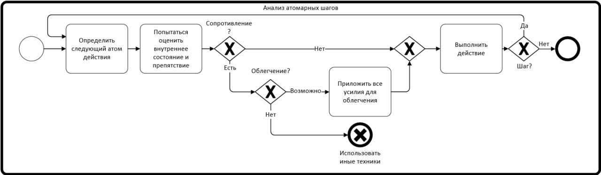

Atom steps technique for solving any longterm problem

Description:
- Find the tiniest step that you need to make toward you goal. Even "i need to sit down on the cheer" counts as a step.
- Try to feel your emotions about this step. Can you do this? If there is no resistance, just do it and go to the next step. If not, why? What causes the resistance?
- If there is a resistance, how can you help yourself with overcoming it? Try to find a solution and make it easier to handle the step.
- Do the step. If you could not do the step, try another technique, there is no need to force yourself with willpower.
- After step, go to the next step on the path.
Technique list